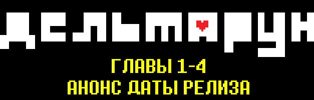
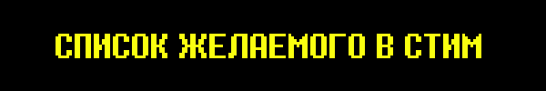
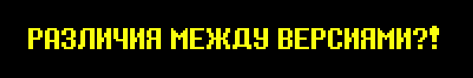

Перейдем сразу к сути.
1-4 главы DELTARUNE выйдут 5 Июня, 2025. Игра будет доступна на ПК, Мак, Nintendo Switch и PlayStation4, как и прежде--а теперь еще и на Nintendo Switch 2 и PlayStation 5.
А вот и и трейлер.

DELTARUNE будет стоить $24.99*.
Стоит купить игру однажды - и все последующие главы будут добавлены в качестве бесплатного обновления.
* В примерном пересчете, если смотреть на разницу цен Undertale между США и другими странами - 622 руб., 422 грн., 4628 тнг.
Однако в стоимость они не входят. Мне кажется, что правильнее всего брать плату за то что есть, а не за то, что я говорю что будет.
Так что $24.99 я считаю ценой за четыре главы!
Надеюсь, как остальные главы будут довершены, вы ощутите, насколько супер супер супер супер хороша эта сделка.
Просто подождите, я вам докажу...!
А еще саундтрек в стиме будет стоить $14.99*. С релизом 3 и 4 глав там будет свыше 150 треков!
И если вы купите саундтрек в Steam, каждый раз с новыми главами вы будете получать новые треки.
Разве это не слишком хорошо за свою то цену?! (учащенно дышит, пуская слюни)
* Примерно 373 руб., 253 грн., 2776 тнг.
(Если вы уже покупали саундтрек отдельных глав на Bandcamp, Главы 3 и 4 тоже будут выпущены отдельным релизом.)


Эй, я только понял, что ни разу не просил добавить игру в список желаемого в Steam.
Я не знаю что список желаемого делает или зачем он в принципе но
Если игра вот вот выйдет, значит осталось совсем немного времени, чтобы занять вершину рейтинга!
Давайте, вперед, ребята! Давайте займем первые места!
(По какой то причине, после указания ссылки, рейтинги резко упали...)


Стремясь использовать по максимуму приписку "Nintendo Swith 2", я очень хотел попробовать сделать кое что особенное...
Так что мы сделали крохотную ОСОБУЮ КОМНАТУ, в которой используется УПРАВЛЕНИЕ МЫШЬЮ НА ДВУХ КОНТРОЛЛЕРАХ ОДНОВРЕМЕННО, что возможно только на Nintendo Switch 2!! Вы могли видеть её в трейлере!!
Но не волнуйтесь! Если ваши рученки не сразу смогут взять Nintendo Switch 2, в других версиях игры тоже есть ОСОБАЯ КОМНАТА с совершенно другим способом управления! (Для ясности, все версии игры содержат одинаковый контент.)
Между версиями игры нет существенной разницы в количестве контента, диалогах, музыки и так далее. Вы получите полный пакет удовольствия, независимо от версии! Никто не будет обделен!
И -- специально для кис на задних рядах -- в независимости от версии, ВСЕ получат PLUEY -- БЕСПЛАТНО!!!
Подробнее об различиях:
Nintendo Switch 2---
- УНИКАЛЬНАЯ ОСОБАЯ КРОХОТНАЯ КОМНАТА!
- Можно импортировать файлы сохранения из Nintendo Switch с демо-версии DELTARUNE с главами 1 и 2!
- Также, можно импортировать файлы сохранения из версии DELTARUNE для Nintendo Switch (полной версии игры)!
Nintendo Switch---
- Можно импортировать файлы сохранения из Nintendo Switch с демо-версии DELTARUNE с главами 1 и 2!
- Можно увидеть очаровательный экран загрузки чуть дольше, чем на других версиях!
Версии для ПК/МАК---
- Удобство использования на ПК!
- Рекомендуемый способ управления для ОСОБОЙ КОМНАТЫ, той что не Nintendo Switch 2.
PS4 & PS5 Versions---
- Можно импортировать файлы сохранения из PS4 с демо-версии DELTARUNE с главами 1 и 2!
- Версия для PS5 также может импортировать файлы сохранения из версии DELTARUNE для PS4 (полной версии игры)!
- Нас заставили сделать ТРОФЕИ! В этот раз челлендж будет довольно трудным. Но - прошу ПОСЛУШАЙТЕ - Я не ожидаю от вас, что вы попытаетесь его пройти! Даже просто знание об этом челлендже уже приносит разочарование и боль! На самом деле, это вероятно одна из самых худших моих идей. Возможно никто даже не попытается. И скорее всего так будет даже лучше... Думаю, для большинства из вас все равно будет уже поздно...
В целом, все эти различия очень незначительны! Независимо от того, какую версию вы получите, она будет замечательной!!!

Что ж, игра выходит! Разве не здорово?
...

Нет, правда, меня обмотали клейкой лентой, привязали к стулу, заперли в коробке, бросили на дно океана, таскали повсюду, как якорь, и т.д., и т.п.!
Вот так это все ощущалось до сих пор!!
Теперь же я могу сказать!
DELTARUNE (Главы 1-4) выходят
5 Июня, 2025!
Разве не здорово?